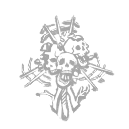

咒术：天罚 Hex: Retribution
所属：死神之枪（杀手）
| 等级 | 档位 1 | 档位 2 | 档位 3 |
|---|---|---|---|
| 数值 | 40 1 | 50 | 60 |
描述
**诅咒：报应** 一个在毁灭时反噬其主的诅咒。胆敢招惹你的人，必将受到惩罚。 每当一名逃生者以任何方式（无论是祝福还是净化）解除图腾上的诅咒：报应时，触发其主要效果：使该逃生者陷入盲目状态，效果持续40/50/60秒。 每当任意诅咒图腾以任何方式被移除（包括其自身被移除）时，诅咒：报应触发其次要效果：使该图腾的光环显示被隐藏20秒。 诅咒效果将持续存在，直到该诅咒图腾被逃生者祝福或净化，从而在本局审判结束前将其解除。 "血腥的蠢货，这是你自己扣下的扳机。" ——卡勒布·奎恩